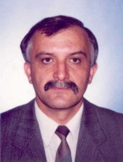

A Magyar Köztársaság Kormányának döntése alapján az Eötvös Loránd Tudományegyetemen 2003. szeptember elsejétol létrejött az Informatikai Kar.

Az informatikus szakemberképzés a karon elsosorban a programozó matematikus szak és a programtervezo matematikus szak keretében folyik. Az Informatikai Kar küldetésnyilatkozata értelmében a kar meghatározó alapfeladata "olyan informatikai szakemberek képzése, akik eros matematikai, számítástudományi alapokra építve széles ismeretekkel rendelkeznek az információs technológiák belso, algoritmikus világában, képesek követni, korrekt és alkotó módon használni, fejleszteni az információs technológiák folyamatos fejlodésben lévo megoldásait. Ezen túlmenoen speciális szakirányokban alkalmazási területek sajátos információtechnológiai rendszereinek, új muködési modelljeinek megismerésével a Kar hallgatói egy-egy szakterület informatikai rendszereinek szakértoivé válhatnak." A programozó és programtervezo matematikus szakjaink több évtizeddel ezelott alakultak ki. Bennük igen komoly intellektuális, szakmai tudás testesül meg. Az Informatikai Karon magasan kvalifikált informatikai szakemberek állnak rendelkezésre, akik képesek az informatikában új eredmények létrehozására, az informatika vívmányainak követésére és az oktatásba való beépítésére. Munkánkban támaszkodunk egyre szélesedo ipari kapcsolatainkra. Legfobb partnerünk az MTA SZTAKI, ahol kihelyezett tanszékünk muködik, kutatóikkal a doktori képzésben való együttmuködésünk nagyon sikeres. A nappali, az esti és a levelezo tagozaton kiadott diplomáink keresettek a piacon, jól cseng az ELTE neve. Végzett hallgatóink neves hazai és külföldi intézményekben, vállalatoknál találnak állást és a visszajelzések alapján jól megállják a helyüket. Ezek adják erosségeinket és ezeket a folyamatokat katalizálja az, hogy a többi tudományegyetemmel egyeztetett irányelvek alapján oktatjuk az informatikus szakembereket, korszerusítjük tananyagainkat. A programtervezo matematikus szakon 2001-ben bevezettük a közgazdasági sávot, 2002-ben a jogi informatikai és a multimédia sávokat. Mindhárom sáv azonnal népszeru lett hallgatóink körében. A megújulás csak az értékeink ? beleértve a jelenlegi munkatársak sokrétu szakmai, tudományos és oktatási tapasztalatait is ? megorzése mellett lesz igazán sikeres. Képzési reformjainknak, a hallgatói és oktatói mobilitásnak új lendületet adhat az Európai Unióhoz történo csatlakozásunk. A felsofokú akkreditált szakképzés megindítására már most reális lehetoségünk van. Így azok a hallgatók is hasznos gyakorlati ismeretekhez juthatnak, akik a foiskolai, ill. egyetemi diplomát nem tudják megszerezni. A távoktatási forma bevezetése hosszabb elokészületeket igényel. A közel fél évszázados múltra visszatekinto térképész szak az Informatikai Karon belül növeli a szakképzés sokszínuségét és egyben erosíti az ELTE informatikus képzésének sajátosságát, mivel a térképészet az információs technológiák algoritmikus és muszaki világai mellett az alkalmazási területeket képviseli. A térképészet informatikai jellegét a térinformatika és a geoinformatika új technológiái erosítik.
Sokak szerint századunk az információs társadalom százada lesz. Országosan megfogalmazódtak azok a prioritások ? az információs infrastruktúra fejlesztése, az elektronikus tartalomszolgáltatás általánossá válása, az információs társadalom polgárainak képzése, a versenyképes gazdaság, a hatékony, szolgáltató közigazgatás, az emberközpontú társadalom, az élethosszig tartó tanulás ? amelyek mindegyike önmagában is az informatikai képzés korszerusítését, fejlesztését igényli az oktatás minden szintjén. A társadalom részérol az elvárások a tanárképzéssel kapcsolatban a legnagyobbak, mivel a tanárok a társadalmi méretu informatikai kultúra kialakításában stratégiai szereppel bírnak. Éppen ezért a tanárjelölteknek a legkorszerubb pedagógiai ismeretek mellett magas szinten kell tudniuk használni az információs technológiai eszközöket, és szaktárgyuktól függetlenül ismerni és használni kell a rohamosan integrálódó médiát, a digitális taneszközöket és a számítógéppel segített oktatás módszereit.
Az oktatási és a technikai feltételek ? beleértve az eszközbázist is ? jelenleg biztosítottak. Korszeru gépekkel, szoftvereszközökkel felszerelt laboratóriumok sora áll tanulmányaik során hallgatóink rendelkezésére.
Az Informatikai Kar tanszékeinek hagyományosan jók a nemzetközi kapcsolatai az oktatás (ERASMUS, TEMPUS, CEEPUS) és a kutatás (közös projektek, pályázatok) területén. Hallgatóink sikeres pályázat esetén külföldi részképzésen vehetnek részt Európa országaiban.
Az Informatikai Kar bázisát képezo Informatikai Tanszékcsoportban végzett kutatómunkát alapvetoen az határozta meg, hogy a tanszékcsoporti keretben együtt élt két alkalmazott matematikai terület (numerikus módszerek és komputer algebra) az informatika területeivel. A kutatások fo jellemzoje, hogy nemzetközileg elismert, magas színvonalon folynak, általában összhangban vannak az oktatási feladatokkal, és illeszkednek a nemzetközi trendekhez. Különösen a két matematikai terület igen eros kutatási eredményességet mutat és jövobeli stratégiája a matematika alkalmazásai és a számítógépeken kiértékelheto modelljei felé irányul. Mindkét matematikai tanszék egyaránt muvel hagyományos elméleti témákat és új, a számítástechnika által inspirált területeket és folyamatosan szélesíti a képzésbe bevonható témákat. A Numerikus Analízis Tanszék munkatársai az alapkutatásokban és az alkalmazások területén is több külföldi egyetem ? Tennessee, MGU Moszkva, Hamburg, Oxford, stb. ? kutatóival dolgoznak együtt. A Komputeralgebra Tanszék nemzetközi híru kutatási területei az analitikus számelmélet, a prímfaktorizáció, a számrendszerek és intervallumkitölto sorozatok, a tömegkiszolgálási modellek, valamint ezek számítástechnikai alkalmazásai. Külföldi egyetemekkel (például Padernborn) sikeres az együttmuködésük. Eredményes kutatómunka folyik az informatika területén is. A vizsgált témakörök lefedik a programozás és az informatikai alkalmazások jelentos területeit. A legújabb kutatási és fejlesztési eredmények a grid számítások, a funkcionális programozás és a szándék alapú programozás témaköreihez köthetok. Egyre erosödo kutatási kapcsolatokat építenek ki hollandiai, svédországi, ausztriai, romániai egyetemekkel. A tanszékek eddigi kutatási tevékenységét és hosszú távú kutatási terveit a feladatok mellett alapvetoen a hagyományok és a személyi állomány összetétele határozza meg. Az Informatikai Tanszékcsoporton belül mindig eros módszertani kutatások folytak. A térképészet és a földmérés területén a sikeres kutatások több évszázados múltra tekintenek vissza egyetemünkön.
Szakmai, tudományos testületekben, rendezvényeken az új kar munkatársai eddig is jelentos szerepet vállaltak. A Térképtudományi Tanszék nemzetközi kapcsolatai kiemelkedoen erosek, tevékenységük meghatározó a térképek és szakkönyvek kiadásában. A kari kollektíva szakmai, tudományos munkája nemzetközi és hazai viszonylatban magasra értékelt. A Magyar Tudományos Akadémia különbözo bizottságaiban több oktatónk tevékenykedik. Számos hazai és nemzetközi folyóirat szerkesztobizottságaiban megtalálhatók munkatársaink. Az elmúlt öt évben közel félszáz konferencia program- és szervezobizottságában képviselték az ELTE-t munkatársaink, 20-nál több pályázatot nyertek el ? részben más intézményekkel közösen. Az Informatika Szakmódszertani Csoport tagjai számos hazai és nemzetközi szakmai verseny szervezésében muködtek közre. Ezek között az egyik legrangosabb rendezvény a Közép-Európai Informatikai Diákolimpia volt. Az Országos Tudományos Diákköri Tanács döntése alapján az informatika szekcióban az ELTE Informatikai Kara rendezi a következo konferenciát 2005-ben.
Az 1635-ben alapított, nagy hagyományokkal, tekintéllyel bíró Eötvös Loránd Tudományegyetem egyik legfiatalabb karának arculata most alakul ki. Ebben a munkában számítunk a Kari Tanács, a kari egységek, a hallgatóink és a társadalmi szervezetek aktív közremuködésére.
Budapest, 2003. szeptember 1.
Kozma László egyetemi docens, az IK dékánja